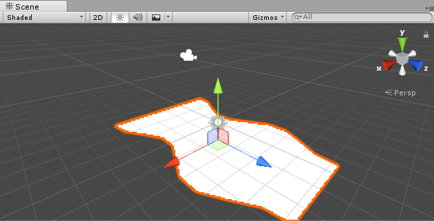
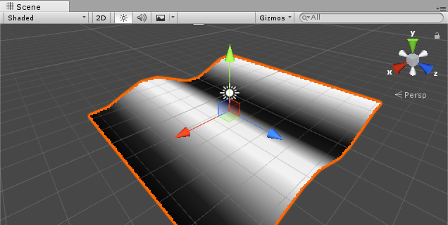
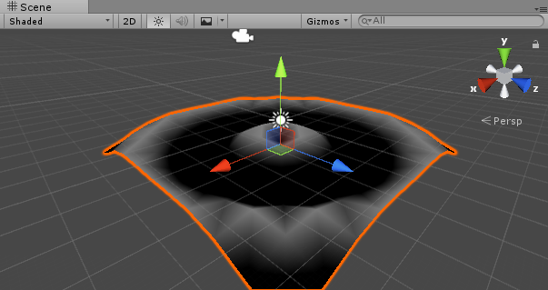
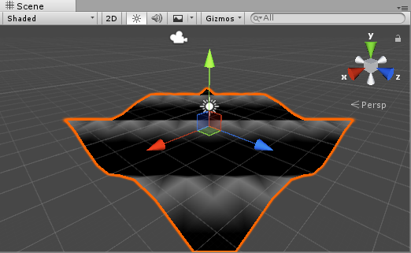
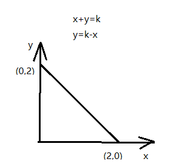
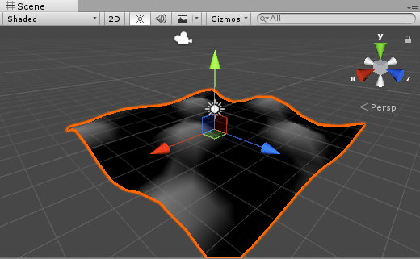
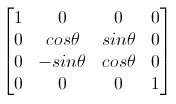
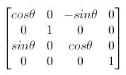
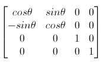
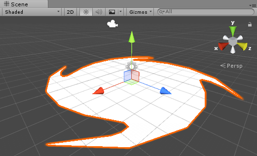

用VectexShader实现水波纹
顶点动画最常见于规律性的海洋波浪，空中飘舞的旗帜。
有规律可循的变换是计算机程序的强项，程序的计算模拟重复性或者随机性的动画，如波浪、漩涡，在没有其他因素干扰的情况下，他们都会保持一定的系数继续维持当前状态，所以用顶点动画来实现这类动画效果是最方便的，并且使用代码的变换计算对于骨骼或者帧动画来说，性能消耗更小，而且人工实现起来，需要较少的工时。
那么顶点动画是怎么实现的？简单看下unity调用opengl的渲染流程：
unity把模型顶点数据封装起来，由cpu统一发送给gpu，gpu拿到顶点后，在顶点函数中，对每个顶点进行MVP变换后，抛弃被遮挡和屏幕外不可见的顶点，剩下的顶点交由片段函数，进行片元的逐像素处理，最后输入缓冲区，渲染到屏幕。
所以在顶点函数中，我们可以获取每个顶点的位置、顶点颜色、UV坐标，并且对它们进行修改变换。
对于渲染画面而言，并不只是调用渲染管线一次就可以，而是无论画面是否改变，要持续不停地调用，在画面渲染的循环过程中，可以每一帧都改变顶点位置，在一秒的多张画面中，就有了动画效果。
顶点移动
这是一个z轴方向的动画，有点像蜗牛与地面接触的部分？

1 | v2f vert(appdata v) |
GLSL提供了sin等多个三角函数，_Time是Unity shader 提供的内置变量，有几个不同速度的Time.
_Time float4 Time (t/20, t, t2, t3), use to animate things inside the shaders.
除了_Time，unity还提供了_SinTime, _CosTime, unity_DeltaTime等，可以在unity documentation上查到。
在OpenGL中，由于某些原因我们通常使用4×4的变换矩阵，而其中最重要的原因就是大部分的向量都是4分量的。我们能想到的最简单的变换矩阵就是单位矩阵(Identity Matrix)。单位矩阵是一个除了对角线以外都是0的N×N矩阵。
(1,0,0,0)
(0,1,0,0)
(0,0,1,0)
(0,0,0,1)
这在这一段函数中，用每个顶点的z分量计算顶点x值，我们无法使用x分量来计算x，因为在一次计算后，x分量的值已经改变了，z是不会变的分量，同时随着靠近摄像机的远近，线性增减，所以这个动画是向着z轴正方向移动的.将x保存到m矩阵，补齐它在y,z,w的值，这三个值并不需要改变，从乘法角度1*n=n本身，随后m矩阵对v.vertex进行变换乘法，最后是MVP变换。
水波纹

1 | struct v2f |
这次是直接修改v.vertex的y分量，没有再做矩阵乘法，两种都可以，这种更加直接简单点，编程起来更加方便.
以v.vertex.x为输入变量，正弦变换后乘以0.5改变的y的上下浮动范围，这个公式是初中数学的，貌似叫正弦公式。为了更加清楚看到每个顶点的高度，我把顶点颜色设置为y的高度值。
由于0.5 * sin(v.vertex.x + _Time.y)的值域是(-0.5, 0.5)，颜色rgb的值域是(0, 1)，所以给y的值整体加上0.5, 将值域调整到(0, 1).
那在顶点函数里计算的颜色怎么传给片段函数？顶点函数里并不能对顶点进行颜色赋值，所以这就v2f结构体的意义。
struct v2f 从名称上可以看出，vert to frag，意思是从顶点函数传递给片段函数的值的封装结构体。
片段函数需要获取顶点函数中计算好的颜色，就需要写在v2f中，由vert返回v2f，frag的输入参数为v2f，frag的返回值是颜色，COLOR是frag函数返回的语义，GLSL对于内建类型都有语义，这个以后在Vertex Shader中有说到。
涟漪

1 | // 向内聚合 |
从横向波浪变成圆形波浪只需要改变输入变量，由x的值改为x0z平面点到中心位置(0, 0)的距离，所得结果就是点(x.z)到(0, 0)为半径的圆形，产生sin函数曲线的y方向高度变换，这个变换又是随着_Time.y不断增加，在(-0.5, 0.5)范围内周期性变化。
说到这里，三角函数是计算机模拟水波纹的好东西啊，本文中所有的动画都是基于sin()函数的。
斜向水波

1 | v.vertex.y = 0.2 * sin((v.vertex.x + v.vertex.z) + _Time.y); |
斜方向上的波浪，同时取x和z的叠加值作为输入变换，这应该也很好理解，能立刻联想到y = x函数的图示，斜向上45度角，y和x值相等，放到x0z平面就是, x和z值相等的位置进行y高度的计算。
如果不好想象，那就来举个例子：
- 假设sin()的输入值为2，那么有下列点
(2, 0) (1.9, 0.1) (1.8, 0.2) (1.7, 0.3) … (0.3, 1.7) (0.2, 1.8) (0.1, 1.9) (2, 0) - 这些点在二维坐标系的连线是
 - 当x+z等于相同值时，sin()的结果相同，在该顶点动画里就体现为相同高度，而sin()是周期性的曲线，就形成了一定频率的斜向波浪。
更真实的波浪

将两个正弦波相加，让振幅/频率/偏移各不相同，来达到水波纹的此起彼伏效果.
1 | v.vertex.y += 0.2 * sin((v.vertex.x + v.vertex.z) + _Time.y); |
顶点旋转
顶点的移动是改变顶点分量的值，不管是直接加减一个常量，还是赋值一个三角函数计算出来的变量。那旋转呢？旋转必须经矩阵乘法，而且这个矩阵的量和角度相关。
绕x轴旋转

绕y轴旋转

绕z轴旋转

这些矩阵怎么得到的，这里有推导。
下图这个“风车”动画会正向逆向交替转动。

将所有顶点围绕y轴旋转angle度，然后要让这个角度不断随着时间变换，unity提供了_SinTime，这个随着时间变化的正弦值，它的类型是fixed4，x/y/z/w的值分别是(t/8, t/4, t/2, t)，由于每个顶点的围绕y轴旋转角度相同，就会造成越靠近中心的顶点，转速越快，越远离中心的顶点，转速越慢，从而形成一种拖尾的效果。
下列代码中是围绕y轴的顶点选择变换。
1 | v2f vert (appdata_base v) |
1位置有个新的内建函数UnityObjectToClipPos，可以在内置的UnityCG.cginc中找到，它的返回值和参数是：
float4 UnityObjectToClipPos(float3 pos)
手册中的描述：
Transforms a point from object space to the camera’s clip space in homogeneous coordinates. This is the equivalent of mul(UNITY_MATRIX_MVP, float4(pos, 1.0)), and should be used in its place.
小结
在顶点函数中，顶点的位置可以任意通过矩阵变换得到，变换后的顶点位置再做一次MVP变换，得到摄像机所见的图像。